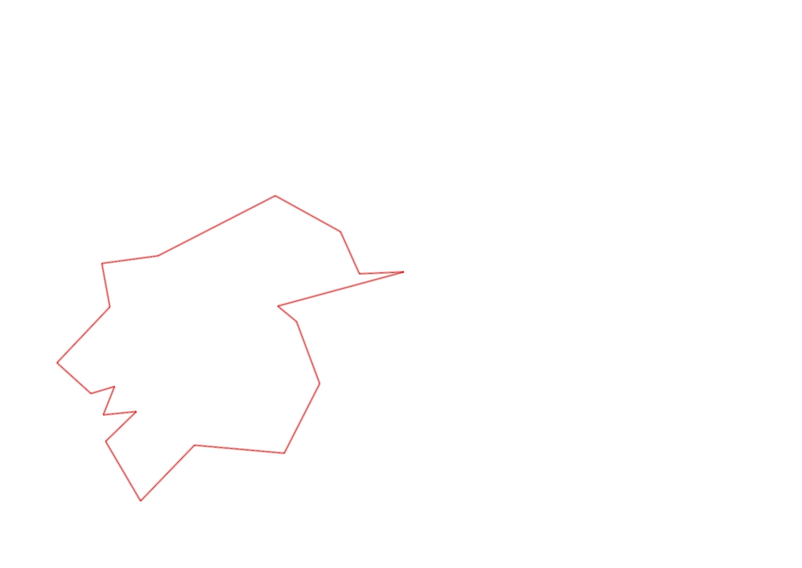
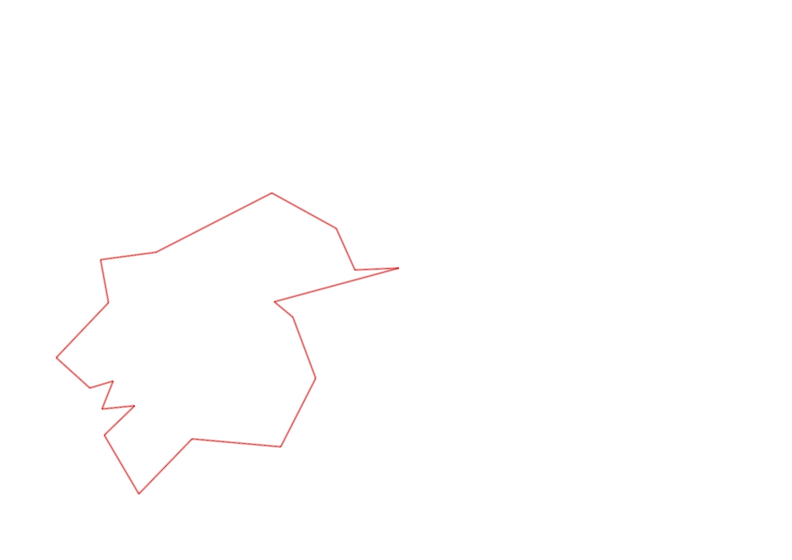

| Control |
Points |
Time Punched |
Distance |
Your Time |
Pace |
Place |
Fastest Time |
Median Time |
% Behind Fastest |
| 127 |
20 |
|
0.06 |
0:00:45 |
12:30 |
21 / 30 |
0:00:01 |
0:00:32 |
4400% |
| 42 |
40 |
|
0.17 |
0:01:44 |
10:11 |
7 / 20 |
0:01:06 |
0:01:52 |
57% |
| 61 |
60 |
|
0.21 |
0:04:05 |
19:26 |
17 / 20 |
0:02:20 |
0:03:34 |
75% |
| 59 |
50 |
|
0.24 |
0:02:31 |
10:29 |
11 / 19 |
0:01:47 |
0:02:30 |
41% |
| 77 |
70 |
|
0.21 |
0:02:33 |
12:08 |
9 / 17 |
0:01:25 |
0:02:33 |
80% |
| 40 |
40 |
|
0.18 |
0:02:36 |
14:26 |
7 / 18 |
0:01:16 |
0:02:38 |
105% |
| 41 |
40 |
|
0.11 |
0:01:36 |
14:32 |
13 / 20 |
0:00:28 |
0:01:07 |
242% |
| 71 |
70 |
|
0.09 |
0:01:39 |
18:20 |
9 / 12 |
0:00:33 |
0:01:12 |
200% |
| 54 |
50 |
|
0.08 |
0:00:54 |
11:15 |
23 / 33 |
0:00:27 |
0:00:45 |
100% |
| 69 |
60 |
|
0.07 |
0:04:59 |
1:11:11 |
19 / 20 |
0:01:00 |
0:01:56 |
398% |
| 53 |
50 |
|
0.12 |
0:01:56 |
16:06 |
17 / 26 |
0:01:16 |
0:01:51 |
52% |
| 44 |
40 |
|
0.2 |
0:01:35 |
07:55 |
11 / 22 |
0:00:39 |
0:01:40 |
143% |
| 32 |
30 |
|
0.12 |
0:03:00 |
25:00 |
21 / 22 |
0:00:43 |
0:01:19 |
318% |
| 63 |
60 |
|
0.15 |
0:01:55 |
12:46 |
20 / 25 |
0:01:05 |
0:01:29 |
76% |
| 107 |
100 |
|
0.35 |
0:04:24 |
12:34 |
14 / 22 |
0:02:14 |
0:03:49 |
97% |
| 57 |
50 |
|
0.2 |
0:05:57 |
29:45 |
19 / 22 |
0:01:54 |
0:03:53 |
213% |
| 92 |
90 |
|
0.12 |
0:04:53 |
40:41 |
11 / 18 |
0:02:10 |
0:04:22 |
125% |
| 47 |
40 |
|
0.12 |
0:08:13 |
1:08:28 |
15 / 16 |
0:01:07 |
0:04:40 |
635% |
| Finish |
0 |
|
0.34 |
0:03:45 |
11:01 |
3 / 4 |
-1 day, 23:10:33 |
0:03:22 |
-99% |
Total Distance Covered: 3.14km
Points Scored: 960
Late Penalty: 0
Final Score: 960
Total Time: 0hours 59minutes 0seconds
Efficiency: 305.73 points/km
 
